Overhaul
1. Install the new oil seal.2. Set the change piece.
3. Install the shift rod.
4. Install the steel ball, the spring, and the set screw.
5. Install the change piece attaching bolt
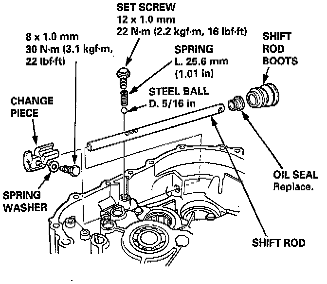
6. Install the shift rod boots.
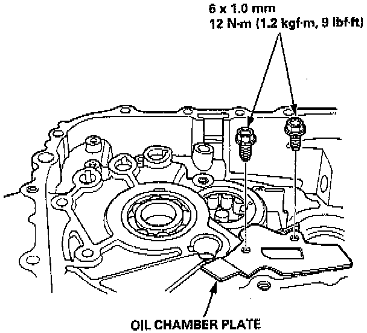
7. Install the oil chamber plate.
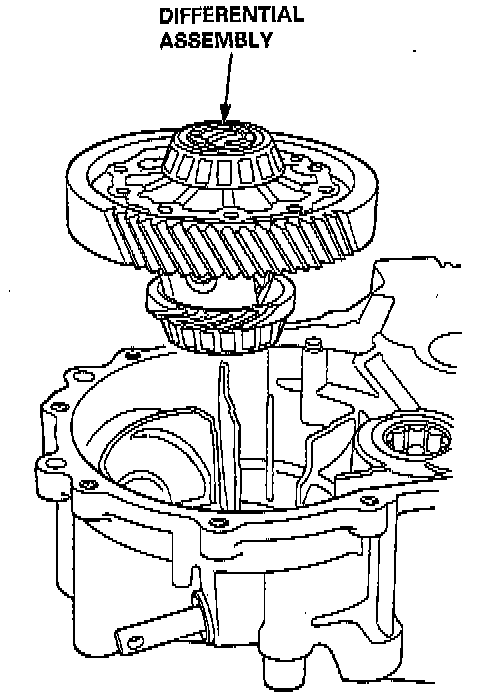
8. Install the differential assembly.
9. Position the spring washer and the washer onto the mainshaft bearing.
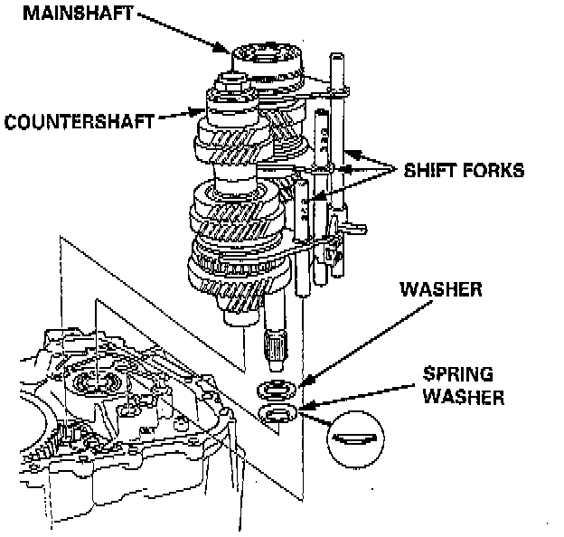
10. Install the mainshaft, the countershaft, and the shift fork assemblies.
NOTE: Align the finger of the interlock with the groove in the shift fork shaft.
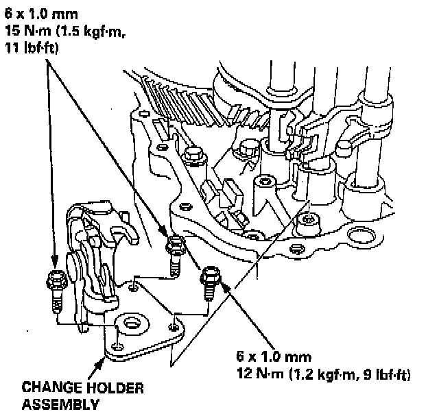
11. Install the change holder assembly.
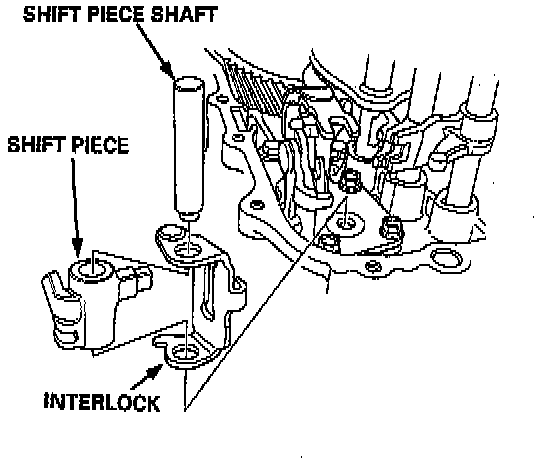
12. Install the shift piece and the interlock, then install the shin piece shaft.
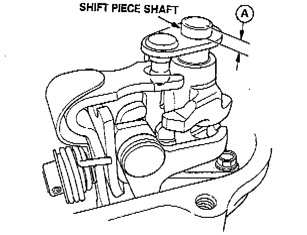
13. Measure the distance (A) after mounting the shift piece shaft. If it's incorrect, check the installation.
- Distance (A): 11.9 - 12.3 mm (0.47 - 0.48 inch).
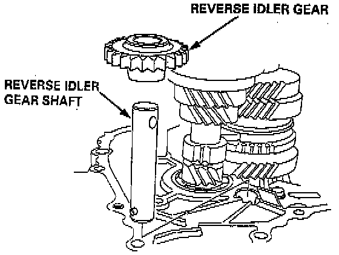
14. Install the washer, the reverse idler gear, and the reverse idler gear shaft.
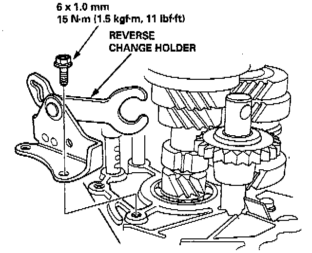
15. Install the reverse change holder.
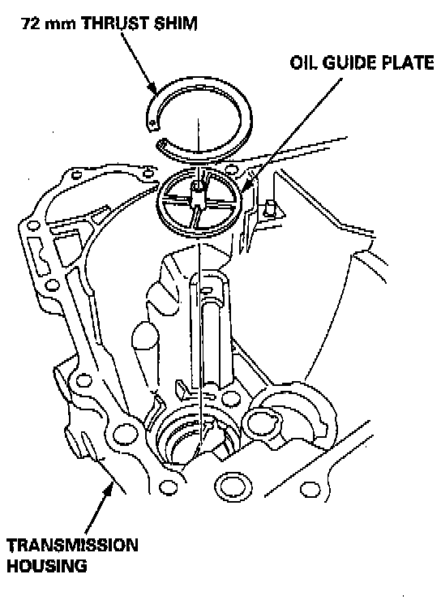
16. Install the oil guide plate and the 72 mm thrust shim into the transmission housing.
17. Install the oil gutter plate.
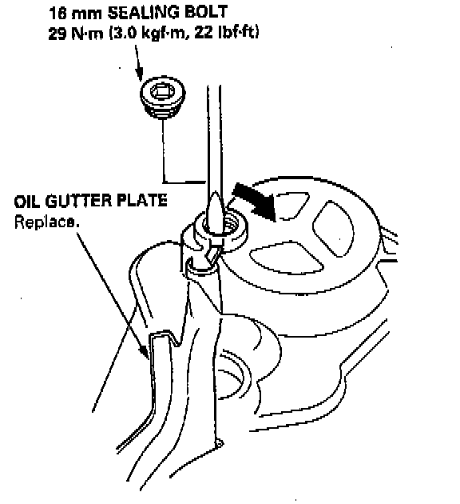
18. Bend the hook of the oil gutter plate, then install the 16 mm sealing bolt.
NOTE: Apply liquid gasket to the threads.
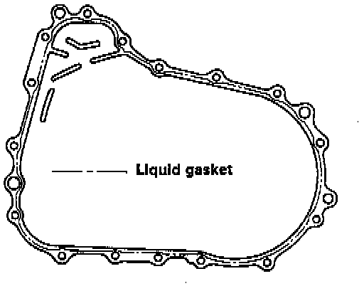
19. Apply liquid gasket to the surface of the transmissionsion housing as shown.
NOTE:
- Use liquid gasket.
- Remove the dirt and oil from the sealing surface. Seal the entire circumference of the bolt holes to prevent oil leakage.
- If 20 minutes have passed after applying liquid gasket, reapply it and assemble the housings, and allow it to cure at least 30 minutes after assembly before filling the transmission with oil.
20. Install the dowel pins.
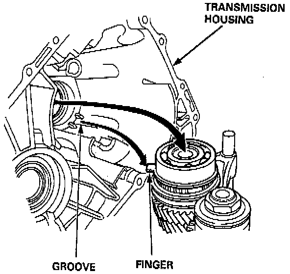
21. Install the transmission housing by aligning the groove in the housing with finger on the stop ring.
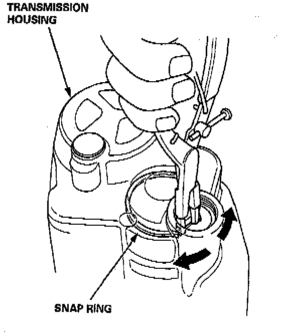
22. Lower the transmission housing with the snap ring pliers, and set the snap ring in the groove of the countershaft bearing.
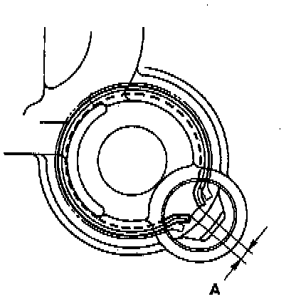
23. Check that the snap ring is securely seated in the groove of the countershaft bearing.
- Dimension (A) as installed: 4.6 - 8.3 mm (0.181 - 0.327 inch).
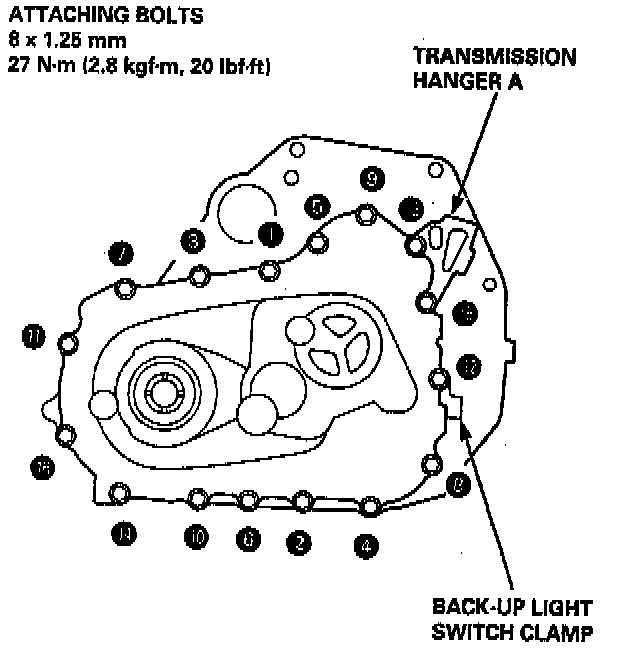
24. Install the transmission hanger A and back-up light switch clamp, then tighten the transmission housing attaching bolts in the numbered sequence shown below.
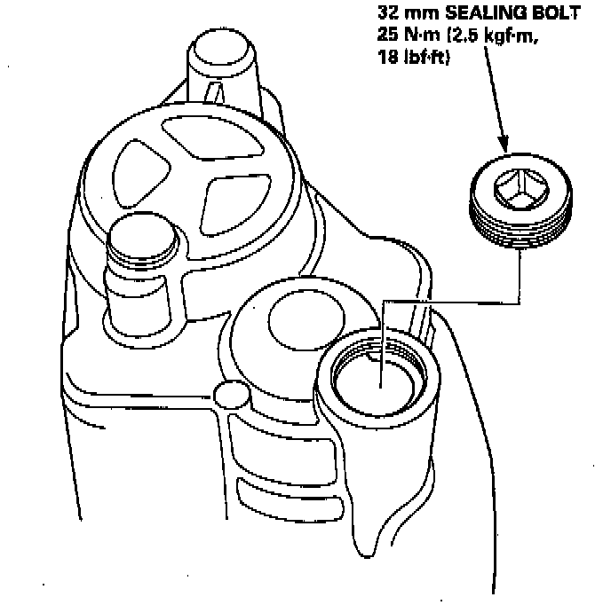
25. Install the 32 mm sealing bolt.
NOTE: Apply liquid gasket to the threads.
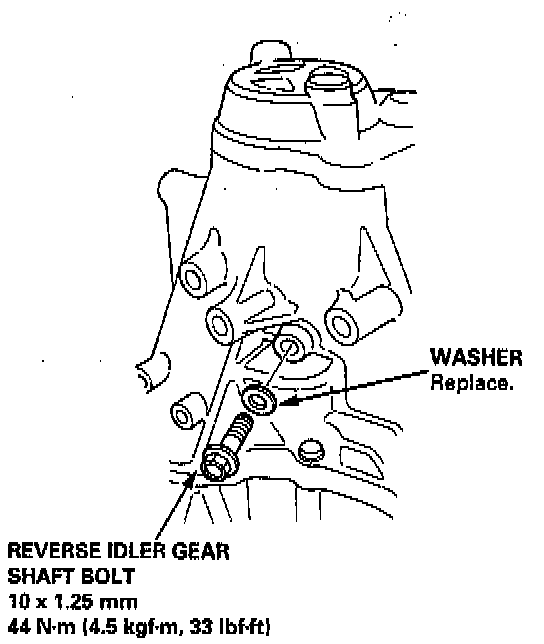
26. Tighten the reverse idler gear shaft bolt.
27. Install the steel balls, the springs, and the set screws.
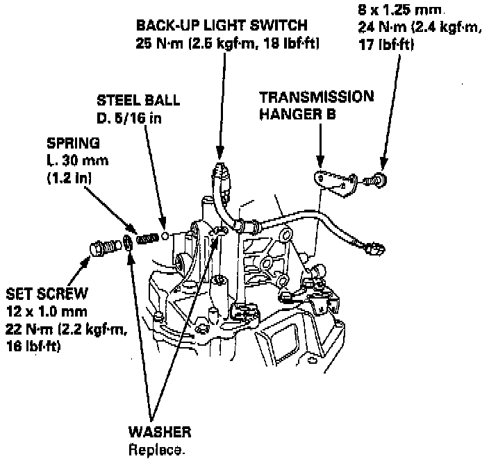
28. Install the back-up light switch and the transmission hanger B.